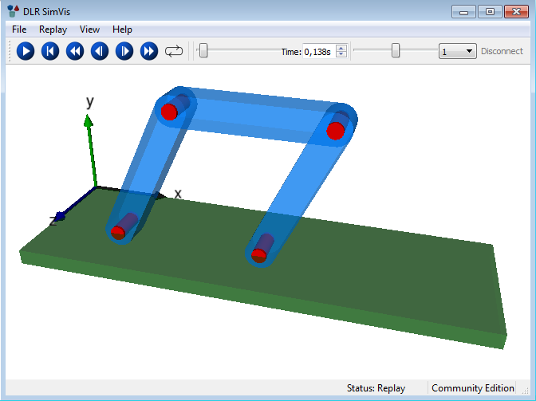

Modia3D
Modia Platform
The Modia platform is a prototype system for the next modeling and simulation generation of physical systems described by differential and algebraic equations. It consists currently of the following Julia packages that are all under development (not all are yet publicly available):
- Modia - Equation based modeling
- Modiator - 2D/3D web-app model editor
- ModiaMath - Simulation enviroment
- Modia3D - 3D geometry and 3D mechanics
- ModiaMedia - Thermodynamic property models
- Modelia - Modelica model importer
Modia3D
Modia3D provides 3D geometry to physical systems so that geometrical objects can be directly accessed and utilized in a model. Functions are provided, for example, to compute the volume, mass, and inertia of a geometrical object or the distance between two objects. Furthermore, Modia3D models 3D mechanical systems and shall be expanded into other domains in the future (for example to utilize the 3D geometry to model heat flow in buildings or satellites). In the future it will be possible, for example, to model the 3D mechanical part of a robot with Modia3D and the electrical motors and gearboxes that are driving the joints with Modia.
Modia3D uses ideas from modern computer game engines to achieve a highly flexible setup of mechanical systems including collision handling. Other features are utilized from multi-body programs, such as support for closed kinematic loops, and elastic response calculation. The underlying mathematical formulation are hybrid Differential Algebraic Equations (DAEs) that are solved with the variable-step solver IDA via the Sundials.jl Julia package.
Collision handling with elastic response calculation is performed for geometrical objects that are defined with a contact material and have a convex geometry or are approximated by the convex hull of a concave geometry. Penetration depths and Euclidean distances are computed with the improved Minkowski Portal Refinement (MPR) algorithm [1]. The details of the contact law are provided in [5] and several examples are discussed in [4]. The user's view of Modia3D is introduced in [2] showing the very flexible definition of 3D systems. Some key algorithms are discussed in [3]. A more detailed overview of the available features is also given in the Modia3D documentation.
Papers and videos about Modia3D:
- [1] Collision Handling with Variable-Step Integrators (EOOLT 2017, December)
- [2] Component-Based 3D Modeling of Dynamic Systems (American Modelica Conference 2018, October)
- [3] Algorithms for Component-Based 3D Modeling (13th International Modelica Conference 2019, March)
- [4] Modia3D: Modeling and Simulation of 3D-Systems in Julia (JuliaCon 2019, July, under review); talk recorded on YouTube
- [5] Collision Handling with Elastic Response Calculation and Zero-Crossing Functions (accepted for publication at (EOOLT 2019, November)
Package Features
A 3D object is an instance of struct Modia3D.Object3D and defines a coordinate system moving in 3D together with associated data and properties. The following Object3Ds are currently supported:
Object3Ds with a solid part
Solid parts can be associated with a Modia3D.Object3D. They are defined with struct Modia3D.Solid consisting of an optional solid geometry:

and other optional properties:
- mass propreties (defined by geometry+material-name, geometry+density, or directly defined mass properties),
- contact material (for elastic response calculation),
- visualization material (for visualization, see below).
Since the solid geometry itself is optional, it is possible to just define a coordinate system with associated mass and inertia matrix.
The following functions are provided for a solid geometry geo that is associated with an Object3D object3D:
- volume(geo),
- centroid(geo),
- inertiaMatrix(geo, mass),
- boundingBox(geo, <other arguments>),
- supportPoint(geo, <other arguments>),
- isVisible(object3D, renderer),
- hasMass(object3D),
- canCollide(object3D),
- and other functions.
Object3Ds for visualization
Visualization elements that have a visualization material:

A visualiziation material has the following attributes:
- color (name or rgb-value),
- wireframe (false/true),
- transparency (0.0 is opaque, 1.0 is fully transparent),
- reflectslight (false/true),
- shininess (0.0 is matte surface, 1.0 is very shiny),
- shadowMask (defines whether or not an object casts or receives shadows)
Visualization elements that have no visualization material:

It is planned to support all other visualization elements that are available in the DLR Visualization library (see videos of this library).
Constraints on Object3Ds
An Object3D can be either fixed or freely moving with respect to another Object3D. In the latter case, the movement is described by relative quaternions.
Furthermore, two Object3Ds can be connected together via various joint types. Currently, revolute and prismatic joints are supported. In the near future, more joint types will be added.
Assemblies of Object3Ds
Object3D definitions can be collected together with the Modia3D.@assembly macro in hierarchical structures. For example, in the following four bar mechanism (consisting of 3 bars and the ground as 4th bar), a bar is defined as an assembly consisting of a light-blue SolidBeam Object3D and two red Cylinder Object3Ds. Such a bar is then in turn assembled in the assembly FourBar shown below:

There are the following operations on an instance of an assembly:
Modia3D.visualizeAssembly!(assembly)to visualize the initial configuration of the assembly without simulating anything.Modia3D.SimulationModel(assembly; analysis=xxx, <other arguments>)to generate asimulationModelof the assembly that can be simulated withModiaMath.simulate!. Theanalysiskeyword defines which analysis shall be carried out on the model. Currently supported areKinematicAnalysisto kinematically move the assembly, orDynamicAnalysisto solve the equations of motion of the assembly. In the future it is planned to supportQuasiStaticAnalysisas well.
Release Notes
Version 0.4.0
- Collision handling significantly improved:
- New elastic response characteristics.
- Contact start and end detection with zero crossing functions improved.
- Many bugs removed.
- Several examples for collision handling added.
- KUKA YouBot robot example added (together with simple PTP path planning).
- Documentation considerably improved.
Version 0.3.0
- The first version that requires Julia >= 1.0 (all Julia 0.6 and 0.7 code was removed).
- Adapted to ModiaMath 0.5.0 (earlier versions of ModiaMath are no longer supported).
- Prismatic and Revolute joints have a new keyword
axiswith possible values 1,2,3,-1,-2,-3, to define the axis of movement / rotation.
- All joints have a new keyword
canCollide(default =false). Iffalse, collision detection will not occur to theObject3Ds that are rigidly fixed to each other and connected by the joint.
- Before a simulation is performed, the internal structure is optimized for the computation:
- For all objects that are rigidly connected, the common mass, common center-of-mass, common inertia tensor are computed and used during simulation (and the source frames with mass property objects are ignored if not needed for other purposes).
- Collision detection is switched off for
Object3Dpairs that are rigidly connected to each other. - The spanning tree of the
Object3Ds is simplified, so that during simulation only the minimum number of frames must be traversed and position, velocity, acceleration of these frames are computed.Object3Ds that are only used for visualization are only evaluated at communication points and only the position is computed (not velocity or acceleration).
- More examples and tests added.
Version 0.2.1
- Adapted to Julia 0.7 and 1.0 (including using new package manager via Project.toml, Manifest.toml files).
- Travis Continuous Integration added.
- Wrong UUID of Modia3D and referenced ModiaMath corrected (did not correspond to the UUID in Julias METADATA).
- PyPlot was removed from the REQUIRE and Project.toml files and code was added, so that PyPlot is automatically imported in ModiaMath if it is available in the current environment of the user. The benefit is that Modia3D and ModiaMath can be used, even if PyPlot is not installed. This is especially useful for ContinuousIntegration, because automatic installation of PyPlot often fails. Inspect the wiki page Installing PyPlot in a robust way to install PyPlot in a robust way.
- All extra packages used in examples and tests are now referenced via Modia3D (for example using Modia3D.StaticArrays instead of using StaticArrays). The benefit is that all examples and tests can be directly executed with include (for example: import Modia3D; include(Modia3D.path/examples/dynamics/Simulate_Pendulum.jl)) provided Modia3D is in the current environment. Previously, it was assumed that these extra packages are present in the users environment and an error occured, if this was not the case.
- Dependent packages updated to their newest versions. Especially, warnings from Unitful do no longer occur, due to the update to version 0.12.0.
Version 0.2.0
- First public release (for Julia 0.6.4)
Main developers
Andrea Neumayr and Martin Otter
DLR - Institute of System Dynamics and Control
License: MIT (expat)